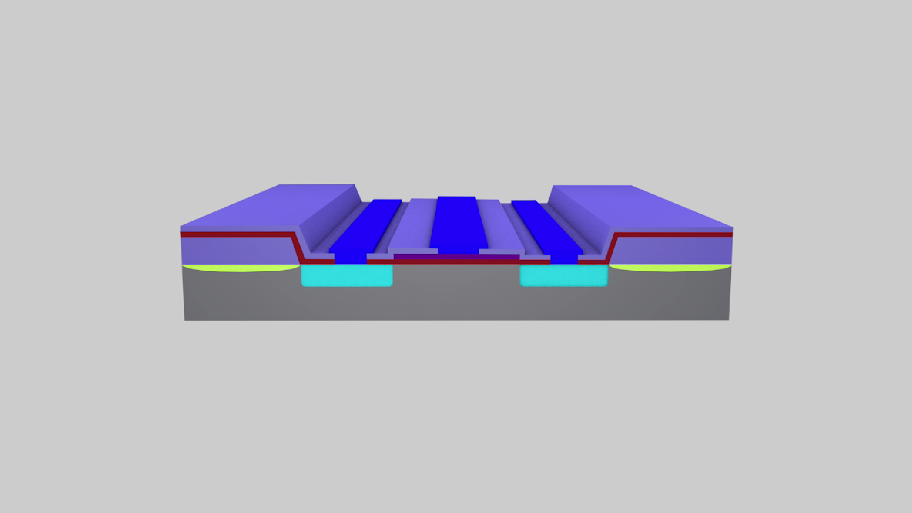

Формирование элементов завершено.
После этого процесса на гибкой эластичной ленте проводится процесс скрайбирования, разламывания и последующими отмывкой и сушкой, при это не снимая кристалл с ленты.
Затем проводится промежуточный контроль для удаления поврежденных и не соответствующих электрическим параметрам ИМС.
После всего этого проходит процесс установки кристалла в корпус, разварки выводов ИМС внутри корпуса и герметизации корпуса.
В завершении производства осуществляется выходной контроль получившейся ИМС и её упаковка в тару «Спутник».
